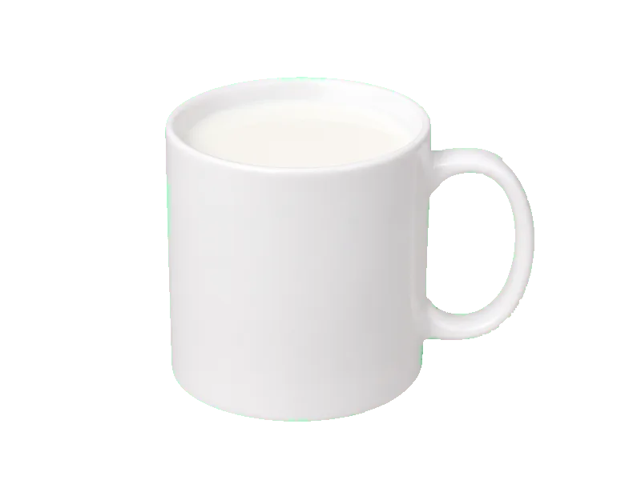

Nabiał i jaja
Mleko 3,2%
Mleko 3,2%: 3.3 g białka, 64 kcal, 4.8 g węglowodanów i 3.6 g tłuszczu na 100 g. Kategoria: Nabiał i jaja.
Kalorie64 kcalna 100 g
Białko / proteiny3.3 g
Węglowodany4.8 g
Tłuszcz3.6 g
Cena (szac.)~0,52 złza 100 g
Ceny zaktualizowano: maj 2026 (szacunek — ceny w popularnych supermarketach)
Porcja: szklanka (250g)
| Kalorie | 160 kcal |
|---|---|
| Białko | 8.3 g |
| Węglowodany | 12 g |
| Tłuszcz | 9 g |
| Cena (szac.) | ~1,29 zł |
Szczegółowe składniki odżywcze na 100 g
| Wartość energetyczna (kalorie) | 64 kcal |
|---|---|
| Białko (proteiny) | 3.3 g |
| Węglowodany | 4.8 g |
| Tłuszcz | 3.6 g |
| Tłuszcze nasycone | 2.2 g |
| Tłuszcze nienasycone | 1.4 g |
| Witaminy i minerały | Wapń, Witamina B2, Fosfor |
| Współczynnik kcal / 1 g białka | 19.4 |
| Cena produktu (szac. za 100 g) | ~0,52 zł |
| Cena za 100 g białka (szac.) | ~15,64 zł |